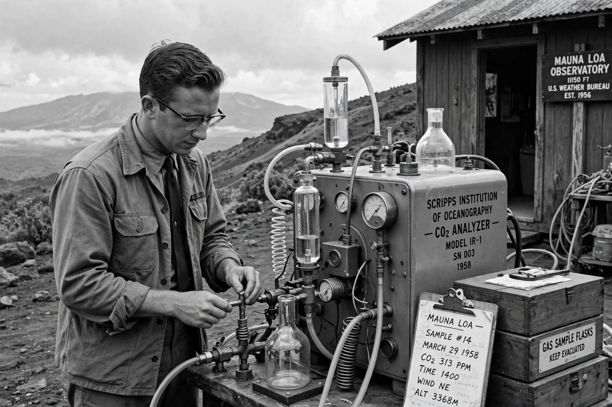

Charles David Keeling
| Charles David Keeling | |
|---|---|
| Born | 20 April 1928, Scranton, Pennsylvania |
| Died | 20 June 2005, Hamilton, Montana |
| Institution | Scripps Institution of Oceanography |
| Known for | Keeling Curve; Mauna Loa CO₂ record |
| Awards | National Medal of Science (2001) |

Charles David Keeling (1928–2005) was an American scientist at the Scripps Institution of Oceanography whose precise measurements of atmospheric carbon dioxide, begun in 1958, produced the {L('Keeling_Curve')} and gave the world its clearest evidence that fossil fuel burning was changing the composition of the atmosphere.
A chemist by training and a perfectionist about instrumentation, Keeling spent nearly five decades defending the continuity and calibration of the record he created.
Career and the curve
After postdoctoral work at Caltech, Keeling joined Scripps in 1956 and, with support from the International Geophysical Year, established monitoring at Mauna Loa and the South Pole in 1958. Within a few years the data showed both the seasonal breathing of the biosphere and an unmistakable year-on-year rise, matching emissions growth.
Keeling's insistence on absolute calibration — building his own precision manometer and standards — made the record authoritative, though he repeatedly fought funding cuts that threatened its continuity. He received the National Medal of Science in 2001. After his death in 2005, his son Ralph Keeling, also a Scripps scientist, continued the programme.
Legacy
The curve that bears his name is reproduced in virtually every account of Climate change; the Keeling Curve is sometimes called the most important environmental dataset of the 20th century. See also NOAA, whose global network complements the Scripps record.
See also: Keeling Curve · Global warming · Greenhouse gas · Climate change